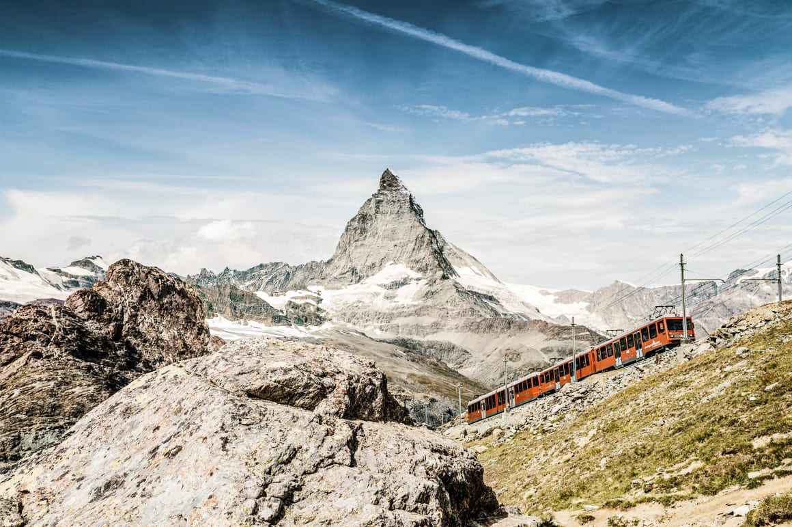
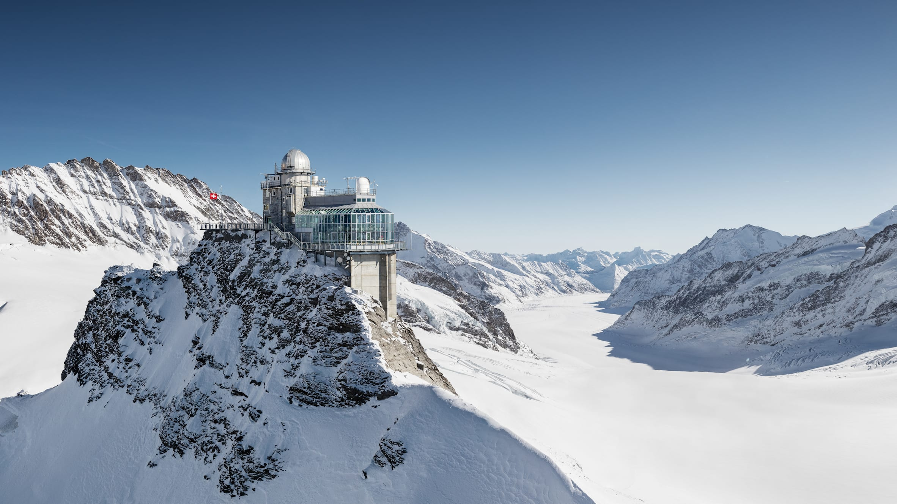
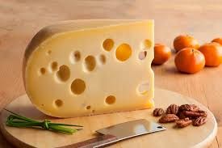
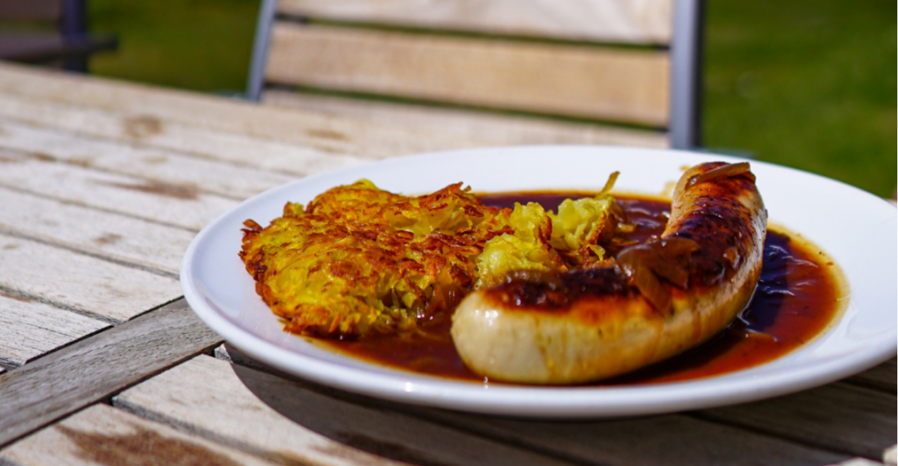

스위스는..
자연이 아름다운 스위스 연방은 유럽 중서부에 위치한 내륙 국가입니다. 남쪽으로 이탈리아, 서쪽으로 프랑스, 북쪽으로 독일, 동쪽으로는 오스트리아와 리히텐슈타인과 국경을 접하고 있습니다. 스위스 고원, 알프스 산맥, 유라 산맥으로 지리적으로 나뉘어져 있으며, 알프스 산맥이 영토의 대부분을 차지하고 있습니다. 900만 인구의 대부분이 취리히, 제네바, 바젤 등 가장 큰 도시와 경제 중심지가 있는 고원에 집중되어 있습니다.
명소
고르너그라트
유럽에서 가장 높은 개방형 톱니바퀴 열차로, 체르마트에서 24분 간격으로 출발하며 계절과 관계없이 1년 내내 운행됩니다. 정상까지는 상/하행 약 35분씩 소요됩니다. 체르마트에서 고르너그라트까지 톱니바퀴 열차를 이용할 수 있습니다.
융프라우요흐
유럽의 지붕이라고 불리는 융프라우요흐는 스위스 여행의 하이라이트입니다. 운행 시간은 일년 내내이며, 정상까지는 기차로 약 2시간 10분이 소요됩니다. 그린델발트 터미널에서 공중 케이블카 "Eiger Express"를 이용하여 융프라우 철도로 환승할 수 있습니다.
음식
퐁듀
스위스에서는 퐁듀를 즐겨 먹습니다. 대표적인 치즈 퐁듀는 녹인 치즈에 빵을 찍어 먹는 요리입니다. 고기 퐁듀와 초콜릿 퐁듀도 있습니다.
뢰스티
뢰스티는 스위스의 대표적인 감자 요리로, 감자를 얇게 썰어 튀기거나 구워 만듭니다. 주로 스테이크나 슈니첼과 함께 먹습니다.
여행 정보
현재 환율 및 화폐 단위
스위스는 스위스 프랑(CHF)을 사용하며, 현재 환율은 1 CHF당 약 1,567.25원입니다.
여행 추천 시기
스위스 여행의 최적기는 봄과 여름입니다. 이때는 날씨가 온화하고, 하이킹과 야외 활동을 즐기기에 좋습니다.